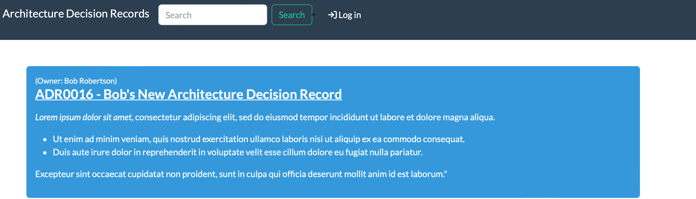

Installing the App
Prerequisites
This section describes the system dependencies required for The App. They can be all installed on a single system, or distributed across your environment. That will be up to you. Our install instructions assume a single system install, and that is good for most use cases. More advanced configurations are also possible, but are not covered here.
Here you will find detailed instructions on how to install and configure the App on Ubuntu 20.04/22.04 LTS.
Install System Packages
Install the prerequisite system libraries and utilities.
This will install:
- Git
- Python 3
- Pip
- Redis server and client
- PostgreSQL server and client
sudo apt update -y
sudo apt install -y git python3 python3-pip python3-venv python3-dev postgresql
LDAP authentication
Install the prerequisite system libraries for LDAP authentication.
sudo apt update -y
sudo apt install -y libsasl2-dev libldap2-dev libssl-dev
Database Setup
In this step you'll create a database and database user for use by the App, and verify your connection to the database.
Create a PostgreSQL Database
At a minimum, we need to create a database for the App and assign it a username and password for authentication. This is done with the following commands.
Danger
Do not use the password from the example. Choose a strong, random password to ensure secure database authentication for your the App installation.
sudo -u postgres psql
Example output:
psql (14.7 (Ubuntu 14.7-0ubuntu0.22.04.1))
Type "help" for help.
postgres=# CREATE DATABASE adr;
CREATE DATABASE
postgres=# CREATE USER adr_db_usr WITH PASSWORD 'insecure_password';
CREATE ROLE
postgres=# GRANT ALL PRIVILEGES ON DATABASE adr TO adr_db_usr;
GRANT
postgres=# \q
Verify PostgreSQL Service Status
You can verify that authentication works issuing the following command and providing the configured password. (Replace localhost with your database server if using a remote database.)
If successful, you will enter a adr prompt. Type \conninfo to confirm your connection, or type \q to exit.
psql --username adr_db_usr --password --host localhost adr
Example output:
Password:
psql (14.7 (Ubuntu 14.7-0ubuntu0.22.04.1))
SSL connection (protocol: TLSv1.3, cipher: TLS_AES_256_GCM_SHA384, bits: 256, compression: off)
Type "help" for help.
adr=> \conninfo
You are connected to database "adr" as user "adr_db_usr" on host "localhost" (address "127.0.0.1") at port "5432".
SSL connection (protocol: TLSv1.3, cipher: TLS_AES_256_GCM_SHA384, bits: 256, compression: off)
adr=> \q
Installation
This section of the documentation discusses installing and configuring the application itself.
These instructions will guide you through the following actions:
- Establish an App root directory for the application environment
- Create an App
adrsystem account - Create a Python virtual environment (virtualenv)
- Install the App and all required Python packages
- Run the database schema migrations
- Aggregate static resource files on disk
- Verify the installation using the development/test server
Important
Your database server and Redis must have been successfully installed before continuing with deployment steps. If you haven't done that yet, please visit the guide on installing the App Prerequisites
Choose your ADR_ROOT
You need to select a directory path where everything related to the ADR App will be installed. We will use this value across the documentation and it will be referred to as ADR_ROOT.
We will be using this path as the home directory of the adr user.
Tip
We have selected /opt/adr, but you may use any directory you choose.
Later on, we will need to set this directory path as the ADR_ROOT environment variable to tell the ADR App where to find its files and settings.
Create the App System User
Create a system user account named adr. This user will own all of the App files, and the web services will be configured to run under this account.
The following command also creates the /opt/adr directory and sets it as the home directory for the user.
sudo useradd --system --shell /bin/bash --create-home --home-dir /opt/adr adr
Setup the Virtual Environment
A Python virtual environment or virtualenv is like a container for a set of Python packages. A virtualenv allows you to build environments suited to specific projects without interfering with system packages or other projects.
When installed per the documentation, the ADR App uses a virtual environment in production.
In the following steps, we will have you create the virtualenv within the ADR_ROOT you chose in the previous step. This is the same we had you set as the home directory as the adr user.
Note
Instead of deliberately requiring you to activate/deactivate the virtualenv, we are emphasizing on relying on the $PATH to access programs installed within it. We find this to be much more intuitive and natural when working with the App in this way.
Create the Virtual Environment
As root, we're going to create the virtualenv in our ADR_ROOT as the adr user to populate the /opt/adr directory with a self-contained Python environment including a bin directory for scripts and a lib directory for Python libraries.
sudo -u adr python3 -m venv /opt/adr
Update the App User .bashrc
So what about the ADR_ROOT? We've referenced this environment variable several times. Here is where it finally gets set.
We need to set the ADR_ROOT environment variable for the adr user and make sure that it always set without having to do it manually.
Run this command to update ~/.bashrc for adr so that anytime you become adr, your ADR_ROOT will be set automatically.
echo "export ADR_ROOT=/opt/adr" | sudo tee -a ~adr/.bashrc
Sudo to adr
It is critical to install the ADR App as the adr user so that we don't have to worry about fixing permissions later.
sudo -iu adr
Observe also that you can now echo the value of the ADR_ROOT environment variable that is automatically set because we added to .bashrc:
echo $ADR_ROOT
Example output:
/opt/adr
Warning
Unless explicitly stated, all remaining steps requiring the use of pip3 or python manage.py in this document should be performed as the adr user!
Understanding the Virtual Environment
Because the adr user was created with ADR_ROOT set as its home directory and we had you set the shell to /bin/bash, the binary path $ADR_ROOT/bin is automatically added to the beginning of the $PATH environment variable:
In Ubuntu >=20.04:
echo $PATH
Example output:
/opt/adr/bin:/usr/local/sbin:/usr/local/bin:/usr/sbin:/usr/bin:/sbin:/bin:/snap/bin
Due to differences between OS, in CentOS $PATH will appear as:
echo $PATH
Example output:
/opt/adr/.local/bin:/opt/adr/bin:/opt/adr/.local/bin:/opt/adr/bin:/sbin:/bin:/usr/sbin:/usr/bin:/usr/local/sbin
Therefore, any commands executed by the adr user will always check $ADR_ROOT/bin first.
Since ADR_ROOT also contains the Python virtualenv for the ADR App, all of the commands you will execute as the adr user, will automatically prefer the virtualenv's commands because they come first in the $PATH.
As the adr user, you may use which pip3 to confirm that you are using the correct version of pip3. The path should match that of $ADR_ROOT/bin. For example:
which pip3
Example output:
/opt/adr/bin/pip3
This makes sure that the version of Python you're using, as well any dependencies that you install, remain isolated in this environment.
Prepare the Virtual Environment
Before we install anything into the virtualenv, we want to make sure that Pip is running the latest version.
Pip is Python's package installer and is referred interchangeably as pip or pip3. For the purpose of this document, we'll deliberately be referring to it as pip3. Many common issues can be solved by running the latest version of Pip. Before continuing with installing the ADR App, upgrade Pip to its latest release.
We also want to deliberately install the wheel library which will tell Pip to always try to install wheel packages if they are available. A wheel is a pre-compiled Python package, which is quicker and safer to install because it does not require development libraries or gcc to be installed on your system just so that some more advanced Python libraries can be compiled.
pip3 install --upgrade pip wheel
Install the App
Developer Note - Remove Me!
Detailed instructions on how to get the app from GitHub.
Use Pip to install the requirements:
pip3 install architecture-decision-records
Great! We have ADR_ROOT ready for use by the adr user, so let's proceed to verifying the installation.
Verify your Installation
You should now have a adrs (Architecture Decisions Records - Server) command in your environment. This will be your gateway to all things for the architecture-decision-records! Run it to confirm the installed version of architecture-decision-records:
adrs --version
Example output:
0.1.0
Configuration
Before you can use the ADR App, you'll need to configure it by telling it where your database can be found, among other things. This is done with the adr_config.py configuration file.
Initialize your configuration
Initialize a new configuration by running adrs init. You may specify an alternate location and detailed instructions for this are covered in the documentation on Configuration.
However, because we've set the ADR_ROOT, this command will automatically create a new adr_config.py at the default location based on this at $ADR_ROOT/adr_config.py:
adrs init
Configuration file created at /opt/adr/adr_config.py
Required Settings
Your adr_config.py provides sane defaults for all of the configuration settings. You will inevitably need to update the settings for your environment, most notably the DATABASES setting. If you do not wish to modify the config, by default, many of these configuration settings can also be specified by environment variables. Please see Required Settings for further details.
Edit $ADR_ROOT/adr_config.py, and head over to the documentation on Required Settings to tweak your required settings. At a minimum, you'll need to update the following settings:
ALLOWED_HOSTS: You must set this value. This can be set to["*"]for a quick start, but this value is not suitable for production deployment.DATABASES: Database connection parameters. If you installed your database server on the same system as the ADR App, you'll need to update theUSERandPASSWORDfields here. If you are using MySQL, you'll also need to update theENGINEfield, changing the default database driver suffix fromdjango.db.backends.postgresqltodjango.db.backends.mysql.
Important
You absolutely must update your required settings in your adr_config.py or the ADR App will __not work___.
Save your changes to your adr_config.py and then proceed to the next step.
Prepare the Database
Before the App can run, the database migrations must be performed to prepare the database for use. This will populate the database tables and relationships:
adrs migrate
Create a Superuser
The App does not come with any predefined user accounts. You'll need to create a administrative superuser account to be able to log into the App for the first time.
adrs createsuperuser
Create Static Directories
The App relies upon many static files including:
media- For storing uploaded images and attachmentsstatic- The home for CSS, JavaScript, and images
Each of these have their own corresponding setting that defined in adr\settings\_base.py, but by default they will all be placed in ADR_ROOT unless you specify otherwise by customizing their unique variable.
The collectstatic command will create these directories if they do not exist, and in the case of the static files directory, it will also copy the appropriate files:
adrs collectstatic
Check your Configuration
The ADR App leverages Django's built-in system check framework to validate the configuration to detect common problems and to provide hints for how to fix them.
Checks are ran automatically when running a development server using adrs runserver, but not when running in production using WSGI.
Hint
Get into the habit of running checks before deployments!
adrs check
Test the Application
At this point, we should be able to run the ADR App's development server for testing. We can check by starting a development instance:
adrs runserver 0.0.0.0:8080 --insecure
Next, connect to the name or IP of the server (as defined in ALLOWED_HOSTS) on port 8080; for example, http://127.0.0.1:8080/. You should be greeted with the Application home page.
Danger
DO NOT USE THIS SERVER IN A PRODUCTION SETTING. The development server is for development and testing purposes only. It is neither performant nor secure enough for production use.
Warning
If the test service does not run, or you cannot reach the ADR App home page, something has gone wrong. Do not proceed with the rest of this guide until the installation has been corrected. Some platforms (such as CentOS) have a firewall enabled by default. If you are unable to connect to the server url on port 8080, verify the firewall policy to allow the appropriate connections, or select an already permitted port.
Note that the initial user interface will be locked down for non-authenticated users.

Try logging in using the superuser account we just created. Once authenticated, you'll be able to access all areas of the UI:
Type Ctrl-C to stop the development server. Now you're ready to proceed to starting the App as a system service.